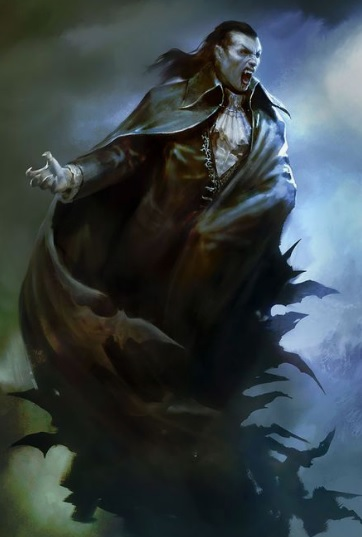

Özellikle geceleri güçlerinde gözlemlenebilir bir artış olan kan emicilerdir. Büyü konusunda yeterli seviyede bilgi sahibidirler. Kana susadıklarında en yakın arkadaşlarını bile beslenmek için kullanabilecek kadar habis varlıklardır.
Seviye 1
Hançer: Hançer kullanabilme yeteneğidir.Kılıç: Kılıç kullanabilme yeteneğidir.
Kırbaç: Kırbaç kullanabilme yeteneğidir.
Anımsa: Ait olduğunun dinin tapınağına dönüş komutudur. Seviye 10a kadar geçerlidir. (anımsa)
Parşömen: Parşömen okuma yeteneğidir.(oku yazdıktan sonra okunacak parşömenin adı yazılır.)
Tılsımlar: Büyü kullanabilme ile ilgili bir yetenektir.(otomatik)
Değnekler: Değnek kullanabilme yeteneğidir.(otomatik)
Seviye 4
Tekme: Savaşçıların hedeflerine güçlü bir tekme atma yetenekleri. Düşmana geçikme verir.(tekme)Seviye 5
Pazarlık: Alışverişlerde alırken ucuza alma, satarken pahalıya satma yeteneğidir. Bu yetenek kullanılarak dükkan sahibi fiyat konusunda ikna edilmeye çalışılır. Hırsızlar pazarlık konusunda doğuştan yeteneklidirler. (otomatik)Seviye 6
Meditasyon: Hızlı iyileşmeye benzer. Yöntem olarak uyurken veya dinlenirken zihin yoğunlaşması kullanılır ve büyü gücünün (mana) yenilenmesi sağlanır. (otomatik)Seviye 8
Mızrak: Mızrak kullanabilme yeteneğidir.Sıyrılma: Saldırının vuracağı noktadan ayrılma prensibine dayanan tekniktir.Hem saldıran hem de sıyrılmayı deneyen için çeviklik değeri çok önemlidir.Savaşçılar sıyrılma yeteneğinin ustalarıdırlar.(otomatik)
Seviye 9
Hızlı iyileşme: Yaşam puanının daha hızlı yenilenmesini sağlayan yetenek. Bu yetenek yürürken de, dinlenirken de, uyurken de çalışır.(otomatik)Seviye 10
Vampir: İnsandan vampire dönüşme yeteneğidir. Bu yeteneği görevci vasıtasıyla öğrenebilirsiniz. (Vampir)Vampir ısırığı: Düşmanı ısırarak yüksek bir hasar verme yeteneğidir. (ısır)
Sessiz yürüyüş: Sessiz hareket etmeyi sağlayan yetenek.
Seviye 11
Omuz: Hasar vermeyi ve düşürmeyi hedefleyen yetenek. Çok etkilidir.Muhakkak pratik edilmesi gerekir. Omuz yiyen karakter 2 tur boyunca yerden kalkamaz ve büyü yapamaz. Omuz atan karakter 2 tur boyunca otomatik dövüşmekten başka birşey yapamaz. Omuz atmaya çalışan kişi yere düşebilir. Uçanlara, çeviklere omuz atmak zordur. Yapılı ve ağır birine omuz atmak bir binaya omuz atmaya benzeyebilir. (omuzKapıkırma: Belirtilen yöndeki kapıyı (veya belirtilen isimdeki kapıyı)omuz atarak kırmayı hedefleyen yetenek. (kapıkır
Seviye 12
İkili hamle: Dövüşlerde bir turda iki hamle yapabilmek için gerekli yetenek. (otomatik)Seviye 13
Yaşam sezme: Odadaki yaşam formlarını sezme yeteneği.(sez)Seviye 14
Yüksek zarar: Kurbana verilen zararı artırmayı sağlayan yetenek. (otomatik)Seviye 15
Vampir teması: Vampirlerin hedeflerini dokunma yöntemiyle etkileri altına alarak bilinçsizce uyumalarını sağlayan yetenek. Isırma öncesi hazırlık! (dokunSeviye 19
Çıplak el: Silahsızken de etkili dövüşebilmeyi sağlayan yetenek. (otomatik)Seviye 20
İrfan: Bilgelik vasıtasıyla herhangi bir eşyanın niteliklerini öğrenme yeteneğidir. Tanımlama büyüsüne benzer. (irfanSeviye 21
Trans: İyileşmenin hızını arttıran yetenek.(otomatik)Seviye 22
Karşılama: Kurbanın saldırısını silahla karşılamak için kullanılan yetenek. (otomatik)Seviye 32
Üçlü hamle: Dövüşlerde bir turda üç hamle yapabilme yeteneği. (otomatik)Seviye 39
Kalkan yarma: Dövüş sırasında rakibin kalkanını yarmak için kullanılır. (kalkan yarma)Seviye 43
Hayvan kontrolü: Hayvanları kontrol altına almak için kullanılan bir yetenek. (kontrolSeviye 44
Silah yarma: Dövüş sırasında rakibin silahını yarma yeteneği. (silah yarma)Seviye 48
Kırbaçla: Silah olarak bir kırbaç kullanırken, kırbacı savurarak düşmanın kaçmasını engelleyecek şekilde zarar verme yeteneği.Seviye 50
Işık direnci: Işığın zarar verici etkisini azaltabilme yeteneği.Seviye 10
Anımsama sözcüğü: Kendi dininin tapınağına dönmeyi sağlayan büyü.(büyü anımsama)Seviye 13
Zırh: Hedef kişiyi korumayı, aldığı darbelerin etkisini azaltmayı amaçlar.(büyü zırh hedef_adı) İyi saptama: Büyücünün iyi ruhları saptamak için kendi gözlerine yaptığı büyü.(büyü iyi)Seviye 14
Yanan eller: Hedefe zarar veren bir çeşit büyü.(büyü yanan düşman_adı)Seviye 16
Zayıflatma: Kurbanın gücünü azaltır ve zayıflamasını sağlar.(büyü zayıf düşman_adı)Seviye 20
Körlük: Kurbanı kör etmek maksadıyla kullanılır.(büyü körlük düşman_adı)Kalkan: Kişiyi koruyan bir kalkan oluşturan büyü.(büyü kalkan hedef_adı)
Seviye 23
Görünmezi saptama: Büyücünün görünmezleri saptamak için kendi gözlerine yaptığı büyüdür.(büyü 'görünmezi saptama')Seviye 24
Hava kontrolü: Havanın durumunu iyileştiren veya kötüleştiren büyü.(büyü hava iyi, büyü hava kötü)Büyü defet: Büyüleri iptal etmeyi sağlayan büyü.(büyü defet düşman_adı)
Seviye 25
Renk spreyi: Düşmana zarar veren bir büyü.(büyü renk düşman_adı)Seviye 26
Gül: Bir adet gül yaratmayı sağlayan büyü.(büyü gül)Seviye 27
İyiden korunma: Kişiyi iyi yönelimlilere karşı korur.(büyü iyiden)Seviye 28
Yavaşlatma: Kurbanın çevikliğini azaltmak için kullanılır.(büyü yavaş düşman_adı)Seviye 30
Kişi etkileme: Kurbanı hipnotize ederek etki altına almayı sağlar. Etki altına alınan kurban, efendisinin emirlerini harfiyen uygular.(büyü 'kişi etkileme' kurban_adı)Seviye 31
Zehir saptama: Zehirli eşyaları saptamayı sağlayan büyü.(büyü 'zehir saptama' eşya_adı)Seviye 32
İyilik defet: İyi varlıklara zarar veren büyü.(büyü iyilik düşman_adı)Seviye 33
Şimşek zinciri: Bir şimşek topunun elden ele dolaşması ve dokunduğu herkese zarar vermesi üzerine kuruludur. Enerji zarar verdikçe söner ve en sonunda yitip gider.(büyü şimşek)Seviye 38
Yarasa öfkesi: Kurban üzerine zarar uygular. Büyünün seviyesi yükseldikçe vereceği zarar da artar.(büyü yarasa düşman_adı)Seviye 42
Ölü canlandırma: Cesetleri canlandırarak hortlaklar yaratmayı sağlar.(büyü 'ölü canlandırma' ceset)Seviye 43
Uçma: Uçmayı sağlayan büyü.(büyü uçma hedef_adı)Seviye 44
Lanet: Bir eşyayı veya kurbanı lanetlemeyi sağlayan büyü.(büyü lanet düşman_adı, büyü lanet nesne_adı)Seviye 47
Gizemli yürüyüş: Vampirlerin kurbanlarının yanına gitmek için kullandıkları büyü.(büyü 'gizemli yürüyüş' kurban_adı)Seviye 60
Taş deri: Kişinin derisini bir taş kadar sertleştirerek onu korur.(büyü taş)